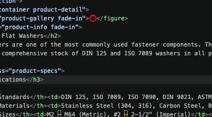

Sicherungsringe
The essential retaining ring — springs into place to secure components on shafts and in bores
The essential retaining ring — springs into place to secure components on shafts and in bores

Unsere Sprengringe (auch als Sicherungsringe oder Schnappringe bekannt) sind Befestigungselemente, die in eine Nut auf einer Welle oder in einer Bohrung passen, um Komponenten zu halten.
Erhältlich in beiden Außen- (für Wellen) und Innen- (für Bohrungen) Typen. Hergestellt nach DIN 471 und DIN 472 Normen mit hochwertigem Federstahl oder Edelstahl.
DIN 471, 472
External & Internal
3mm–200mm
7-15 Tage
| Normen | DIN 471 (External), DIN 472 (Internal), ISO 6181, GB/T 893 |
|---|---|
| Materialien | Kohlenstoffstahl (Spring Stahl), Edelstahl 304, Edelstahl 316 |
| Größen | 3mm–200mm (shaft/bore diameter) |
| Typen | External (Shaft rings), Internal (Bore rings) |
| Oberflächenbehandlung | Phosphate, Schwarzoxid, Zinc, None (Stainless) |
| Härte | 500–700 HV (depending on size) |
| Mindestbestellmenge | 100 pcs (standard), negotiable for bulk orders |
| Verpackung | Kartons, Großsäcke oder nach Kundenanforderung |
Bearing retention
Gear positioning
Shaft mounting
Engine, transmission
Pump, motor assembly
Precision assemblies
| Shaft Dia (d1) | Ring Dia (d3) | Thickness (s) | Groove Width | Groove Depth | Shear Festigkeit |
|---|---|---|---|---|---|
| 8 mm | 7.5 | 0.8 | 1.0 | 0.4 | High |
| 10 mm | 9.4 | 1.0 | 1.1 | 0.5 | High |
| 12 mm | 11.2 | 1.0 | 1.1 | 0.5 | High |
| 15 mm | 14.0 | 1.2 | 1.3 | 0.6 | High |
| 20 mm | 18.5 | 1.5 | 1.5 | 0.7 | High |
| 25 mm | 23.2 | 1.5 | 1.5 | 0.7 | High |
USA • Verifizierter Käufer
Hervorragende Sicherungsringe. Konsistente Abmessungen und gute Federspannung. Perfekt für unsere Lagersicherung.
Deutschland • Verifizierter Käufer
Hervorragende Qualität und schnelle Lieferung. Wir verwenden sie für unsere Präzisionsmaschinenmontage. Sehr empfehlenswert!
We can supply circlips in various sizes and materials — contact us for a quote.
Unser Team kontaktieren